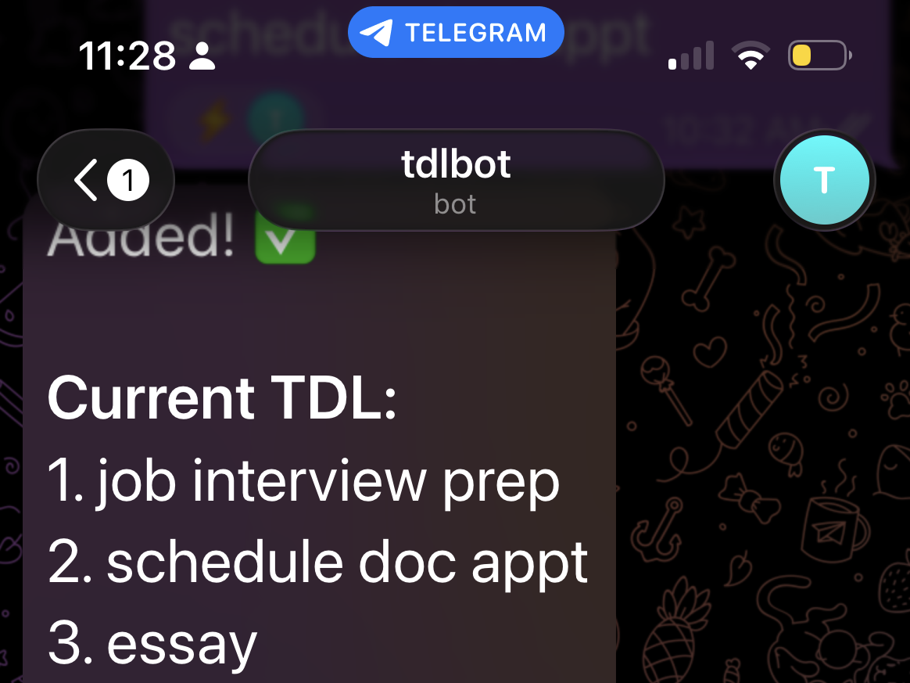
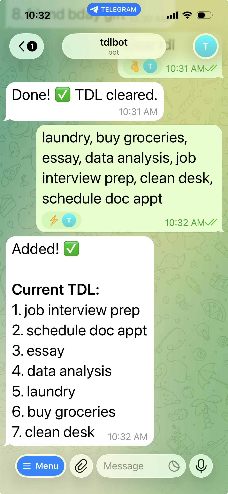
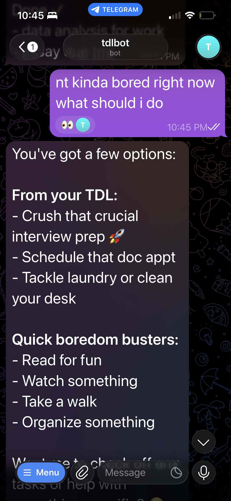
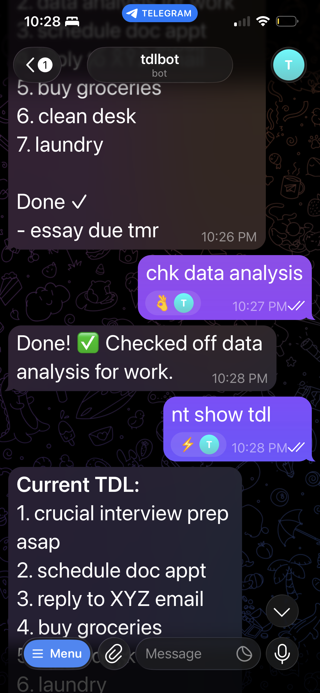

CREATED
← back to creationsself-prioritizing to-do list
tldr: text any tasks you have, and tdl.bot will add them to your to-do list, automatically prioritize, and check off tasks when you're done
impact: offloads mental energy to prioritize and upkeep a to-do list; tdl.bot organizes & re-prioritizes your list automatically and intuitively

agent markdown instructions →
why
Your to-do list itself is another task added to your plate - it's a system you have to maintain, add tasks to, reprioritize tasks in, etc. Even though to-do lists are supposed to offload mental energy, oftentimes they can add unnecessary fatigue.
To solve this problem, I created tdl.bot (to-do list bot), an intelligent to-do list manager: you can word vomit all your tasks to tdl.bot, and it will not only automatically add each task as its own to-do item, but will also intelligently organize your to-do list for you. Of course, you can also do all the normal to-do list stuff, like checking off your tasks, deleting or editing tasks, moving them around, and so forth.
You can also ask tdl.bot anything (e.g. what's my most urgent task? what have I pushed off? I'm bored, what should I do?). It can help you offload the mental energy of prioritization, decision-making, and time management.
what
tdl.bot features:- create tasks: regular messages are treated as tasks. tdl.bot can intelligent identify tasks from any message you text (e.g. "laundry, email, dishes" will get added as 3 new tasks)
- intelligent prioritization: tdl.bot will always add tasks in order of priority, whether or not you explicitly state it
- the text "laundry, buy groceries, essay due tmr, data analysis for work, crucial interview prep asap, clean desk, schedule doc appt" will be automatically translated into the below list:
- crucial interview prep asap
- essay due tmr
- data analysis for work
- schedule doc appt
- buy groceries
- clean desk
- laundry
- tdl.bot texts you back this re-organized list, and also updates your to-do list file with this ordering of tasks
- check off tasks: start messages with "chk" (i.e. "chk [task(s)]") and tdl.bot will check them off your to-do lists
- interface with tdl.bot: start messages with "nt" (short for "note" or "non-task") and tdl.bot will understand that you're sending it a regular (non-task) message
- refine prioritization: "nt make sure walk dog is always first priority each day" will help tdl.bot personalize its prioritization further
- optimize your schedule: "nt i have a 3 hour train ride what tasks can i do" will prompt tdl.bot to identify the best tasks to do for your situation
- ask questions: "nt what's the weather" will prompt tdl.bot to answer like any other regular chatbot, i.e. with the weather



how
There were 3 key components: 1) setting up the zeroclaw agent harness, 2) setting up the telegram channel, and 3) refining a to-do list-specific agent.
For the zeroclaw harness, it is a fairly intuitive setup from the zeroclaw labs site. In my personal instance, however, it was somewhat challenging as I have an old macbook with Intel chip, so I could not do any of the simple one-liner CLI installs; instead, I downloaded the zeroclaw-x86_64-apple-darwin.tar.gz zip file from the releases. It also helped that I set this up during one of the SundAI events, where the CEO of zeroclaw was actually there to help troubleshoot. Note that it is most convenient to keep zeroclaw located in your root directory, if you choose to download the assets as I did. Additionally, zeroclaw also comes with the terminal UI zerocode, as well as a browser GUI that can be accessed at your local gateway at http://127.0.0.1:42617. The first step is to set up an agent, which I did with basic/ default settings, including a locked_down risk profile (which i think is already plenty unlocked for my level of use but depending on your personal risk appetite and device usage, you can choose to provide more permissioning) as well as API access to a model (I used MiniMax here).
To then set up the telegram channel, I first created the telegram bot, then worked through connecting it with zerocode. To create the telegram bot, on Telegram, search up @BotFather (this is Telegram's bot for making bots). Type "/newbot" then follow the instructions that appear. Next, configure the Telegram channel via Zerocode or the browser UI. This means going to the Config tab > Channels > Telegram > [+Add]. Next, you can go to Connection and paste in the bot token that you receive from BotFather when creating the new bot. Next, you want to bind your Zeroclaw to only answer to your chat.
These following steps were heavily supplemented with Claude Code, so I will caveat that it may be better to ask Claude code to help with setting up the channel. From what I remember, the next step is to bind your Zeroclaw agent to only answer to your chat (this way, not anyone can just message your bot and utilize your tokens or prompt inject or otherwise hack your harneess). To do so, you first need to get your Chat ID by navigating to this link (replacing [YourBOTToken] with the appropriate token) here: https://api.telegram.org/bot[YourBOTToken]/getUpdates. Then text your bot, and the URL should show your chat ID.
Next, navigate in the TUI/GUI to your agent that you want to bind to this channel. Navigate to agents > [agent] > channels, and add a channel name. Next, navigate to Peer Groups, and add the Agent, Channel name, and under External Peers, input your Chat ID.
Then, you can try messaging your bot on Telegram, and it should request a bind key. Zeroclaw should generate it, and you can then text your bot the bind key. (I will say I remember having a lot of trouble personally on this step, and had to troubleshoot quite a bit with Claude Code). Then - it should be good to go! You can msesage your Telegram bot and it can make files on your computer, edits, text you back info, act as a chatbot, all that.
Additionally, if you have trouble finding where zeroclaw is writing files to as I did, it is located within your zeroclaw directory, under the agents folder, under a workspace directory. You can access it in your terminal (cd ~/.zeroclaw/agents/AGENTNAME/workspace) and once you're in the directory, you can also view it in your files with the terminal code "open ." which will open your finder on Mac.
Finally, now that there was a working Telegram channel with zeroclaw, the last step was to personalize it to the smart to-do list features that I was looking for. Essentially, I created a to-do list manager agent specific to this to-do list bot, and I personalized it via markdown file. I first drafted a version, sent it to ChatGPT, which then generated the final version that is linked at the top of this page. I also refined it via directly texting (i.e. prompting) the telegram bot, as I found that was also an effective strategy in revising the agent's abilities. With that said, this project in its current form is very much only for personal use, as it could provide significant cybersecurity risks (e.g. very susceptible to prompt injection) at scale.
reflections
I did Science Olympiad for one very confused year in high school, and there was this one event called WIDI, short for Write It Do It. Basically there's a Writer and a Doer. The writer gets handed this weird little complex lego build, and they have to write detailed instructions in a timed window. The Doer then comes in with the deconstructed legos and a piece of paper.
(This event was my favorite Scioly event, as you didn't have to actually know any science... just words.)
This project made me feel like we now live in a world where humans are the Writers and agents are the Doers, and the entire human-agent relationship is just one big recursive WIDI.
← back to creations